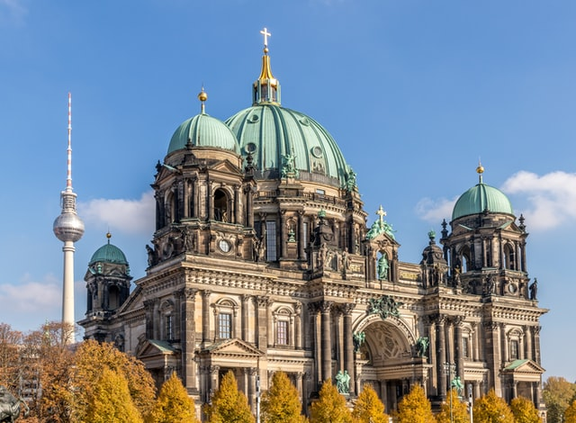

Bienvenido a VisitaBerlin!
En esta web encontrarás toda la información necesaria para realizar visitar Berín de la forma más eficiente y barata. En nuestras excursiones planificadas podrás descrubrir un sinfín de trucos. Los hoteles, museos, atracciones, restaurantes de Berlín e incluso los clubes (para vacunados y recuperados) están abiertos. Además, aquí encontrarás también una descripción general de todo lo que ya está abierto en Berlín.
Hay experiencias únicas esperándote en Berlín, y hay varias atracciones que ciertamente no puedes perderte. Un componente importante del ambiente de Berlín son las artes callejeras. Aventurarse a Teufelsberg, que fue una antigua estación de escucha durante la Guerra Fría, es una forma única de ver el trabajo de los artistas callejeros. Otro consejo de información privilegiada es visitar Mauerpark un domingo. Representa la atmósfera multicultural de Berlín: saboree la cocina y la música de todo el mundo mientras recorre los puestos en busca de recuerdos. Después de un largo día de turismo, visite el antiguo aeropuerto de Tempelhof, donde podrá contemplar la puesta de sol mientras prueba la cerveza local.
Aquí encontrarás lo que estás buscando y pasarás un otoño
genial en Berlín.
Antentamente, el equipo de visitBerlin
Ejemplos de lo que encontrarás en nuestras rutas:
Puerta de Brandenguro

Catedral de Berlín
Jardín de los animales

Torre de la televisión

Muro de Berlín
Parlamento alemán